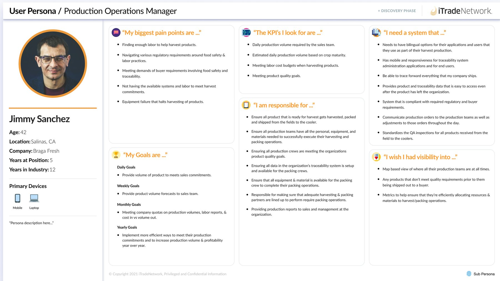
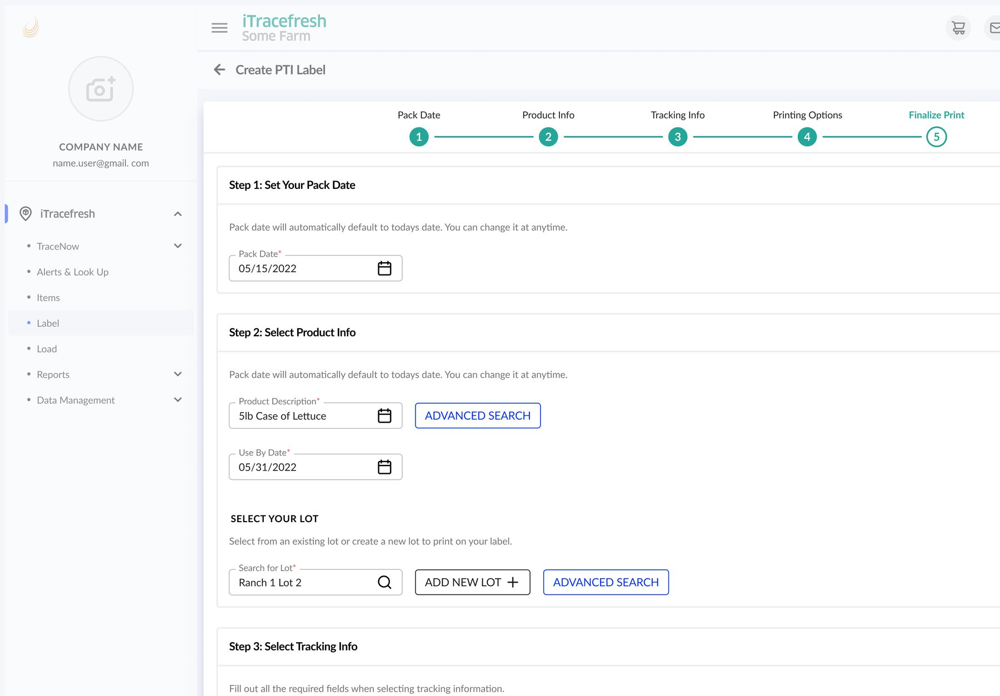
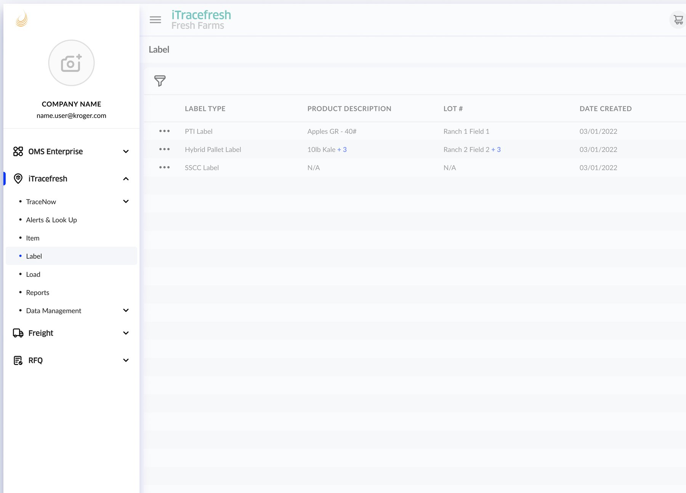
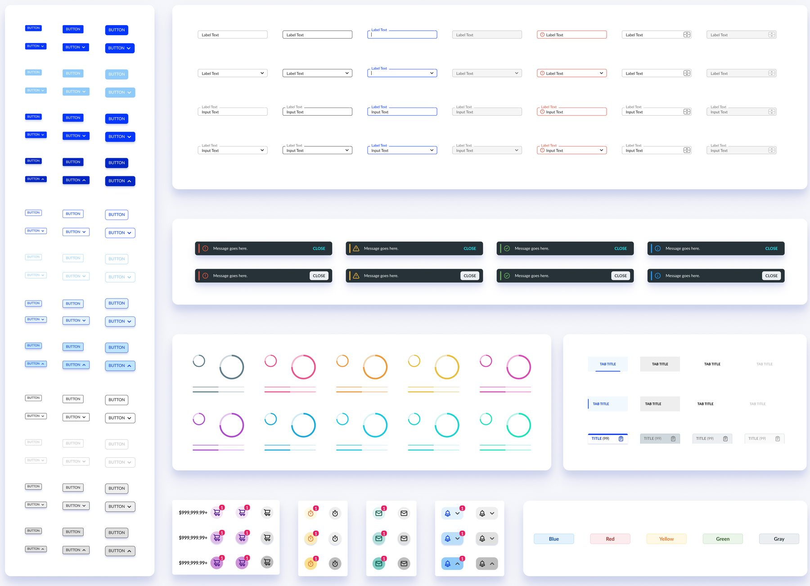

The workflow standing between iTracefresh and its price tag
Growers were comparing iTracefresh to cheaper competitors and buying the cheaper one — not because of what the software did, but because of what it felt like to use, starting with the workflow every packing crew touched every shift: creating a compliance label.
Farm-to-fork compliance, one label at a time
iTracefresh is iTradeNetwork's produce-traceability platform — it gives growers and packers the PTI-compliant labeling and tracking that buyers and regulators require, from harvest to retail shelf. This project rebuilt the single workflow every packing crew relies on multiple times a shift: creating and printing a compliance label.
Outdated UX was a pricing problem, not just a design one
iTracefresh was losing deals on price alone, even against alternatives it outmatched on features. Sales couldn't point to the product experience to justify the premium, because the experience was working against them.
- Losing customers based purely on cost, including to lower-cost competitors offering less capability.
- An interface that hadn't kept pace, with a learning curve steep enough that new users struggled to complete basic tasks.
- No way to justify the higher price tag — the UI undercut the pitch instead of supporting it.
Following the label from field to pallet
With limited direct access to product SMEs, I built a persona from past interviews, PM documentation, and targeted SME conversations, then mapped a harvest crew's full shift to see where labeling actually sat in their day.
- Interviewed the team's SME to close gaps in produce-compliance domain knowledge.
- Mapped a harvest crew member's journey end to end, timing every step from harvesting through packing and labeling.
- Found that labeling — about 1.5 hours of a roughly 6.5-hour shift — was a self-contained slice of the workflow, and the one most exposed to error and rework.

The persona built around the primary user of the label creation flow: a Production Operations Manager balancing compliance, labor, and throughput.Redesign it without breaking what already worked
- Raise success, don't just polish it. Improve task success rate, cut errors, and reduce the time and clicks it takes to print a label.
- Keep the workflow intact. This was a live, regulated production tool — changes had to fit how crews already worked, not ask them to relearn it.
- Stay inside PTI requirements. Every layout and language change still had to satisfy the traceability standards set by government agencies and buyers.
A guided, five-step label wizard
The dense, single-page label form became a guided flow — Pack Date, Product Info, Tracking Info, Printing Options, Finalize Print — with fields gated in order and the flow auto-advancing once each step's required fields were filled.

The redesigned Create PTI Label flow — a five-step wizard with a persistent, clickable progress tracker.- Consolidated the navigation. iTracefresh's modules now live inside iTradeNetwork's shared OMS Enterprise sidebar, instead of a separate, harder-to-find app.
- Rebuilt on a new design system. Every input, button, and status toast now comes from a shared component library used across iTradeNetwork's other applications.
- Tightened the language. CTAs and field labels moved to industry-standard terms, and type-ahead search now surfaces recent products and lots instead of a blank field.

iTracefresh's modules consolidated into iTradeNetwork's unified sidebar navigation, improving findability.
A subset of the new shared design system — inputs, toasts, tabs, and status badges used throughout the redesign.Testing the new flow against the one it replaced
I ran a comparative usability study in UserZoom, putting the legacy label creation flow head-to-head against the new prototype. Each study was fielded to 40 participants.
What changed in testing
Relying on a single SME for domain knowledge slowed early discovery more than I expected — spreading that understanding across the team, and getting in front of customers on-site sooner, would have surfaced real workflow constraints earlier. The new flow also wasn't free: guiding users through five steps instead of one page increased time-on-task by 11% and page views by 52%. That's a tradeoff I'd make again — a little more time in exchange for 14 more points of task success — but it's one worth stating plainly rather than only reporting the wins.